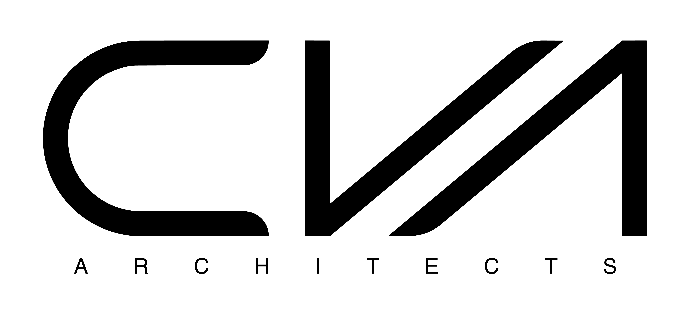

0419 938 222Find out what your site will actually allow.
Before drawings, before fees, before anything: a 30 minute site and feasibility chat with the architect. What the block permits, whether the brief fits the budget, and what the path looks like from here.
Not on the design. On whether it's possible at all.
Most people sitting on a block, or a plan to buy one, are stuck on the same three questions: can I build what I have in mind here, what will it cost, and what happens once I commit. Those are answerable in half an hour by someone who does it for a living, and they're the questions we start with anyway.
So we've made that the first step, at no charge and with nothing attached to it.
Thirty minutes, three answers
In person, on site, or over a call. Whichever suits you.
What the site allows
Overlays, setbacks, height, slope, orientation and access. The constraints that decide what is genuinely buildable, and the ones people usually discover far too late.
Whether the brief fits the budget
A straight read on whether what you're imagining and what you're prepared to spend are in the same conversation. If they aren't, you'll hear it here rather than after a design.
What happens next
The actual path: concept, documentation, approvals, construction. Rough timeframes, where the decisions sit, and an indicative fee range so nothing is a mystery.
We're a small practice, and we're upfront about it
CVA takes on a limited number of homes and boutique developments each year, which means architect-led design, drawn and documented properly, with the architect on site rather than a draftsperson working from a template.
That carries project minimums. Our work typically suits builds from around $[CAMERON TO CONFIRM] in construction cost. If you're after the cheapest set of plans that will pass council, we're honestly not the right practice, and we'd rather say so now than at the end of a quote.
If you're planning something considered, the feasibility chat is the place to start.
Concept to completion, architect-led throughout
Brief & feasibility
Your priorities, the site, the budget. We establish what's possible before anyone draws anything.
Concept design
Developed collaboratively and reviewed together. Shaped by the brief and the site, not a house style.
Documentation & approvals
Full documentation and the approvals path handled, with clear communication at every stage.
Construction
We stay involved through build, so what was designed is what gets delivered.
Homes and developments across the Gold Coast


“Professional and efficient from the first conversation through to the finished project.”Cat G., CVA Architects client
Reasonable questions
Is the feasibility chat really free?
Yes, and there's nothing attached to it. Thirty minutes, no fee, no obligation to proceed. We'd rather have an honest conversation early than write a proposal for a project that was never going to work.
I don't own the block yet. Is it too early?
It's the best time. Knowing what a site will and won't allow before you buy is worth considerably more than knowing afterwards. Bring the listing or the address and we'll talk through it.
What does an architect actually cost?
Fees are a percentage of construction cost and vary with the scope and complexity of the project. You'll get an indicative range in the feasibility chat, based on your actual brief rather than a generic figure.
Do you only design a certain style of home?
No. There's no fixed CVA look. The design comes out of your brief, your site and your budget, which is why two of our projects rarely resemble each other.
Do you handle council approvals?
Yes. Documentation and the approvals path are part of the service, from early concept through to construction.
Renovation, new build, or a small development?
All three. New homes, renovations and additions, townhouses and small-scale unit developments for homeowners, developers and investors.
Start with the feasibility chat
Four details and we'll call to arrange a time. Thirty minutes, no fee, no obligation.
- What your site allows, in plain terms
- An honest read on brief versus budget
- Indicative fees and timeframes
- You speak with the architect, not a salesperson
Thanks. We’ll be in touch.
Your details are with us, and we’ll call to arrange a time for your feasibility chat. If you’d rather talk now, Cameron is on 0419 938 222.